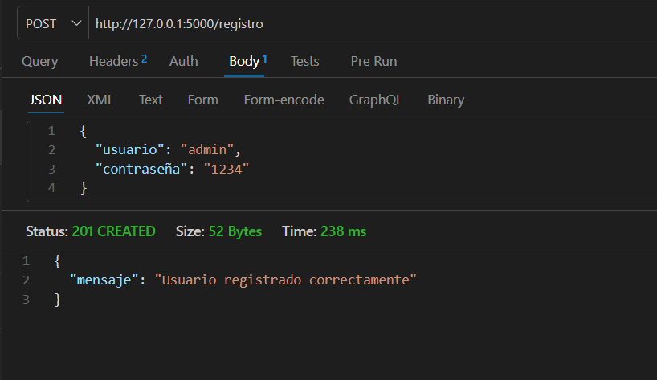
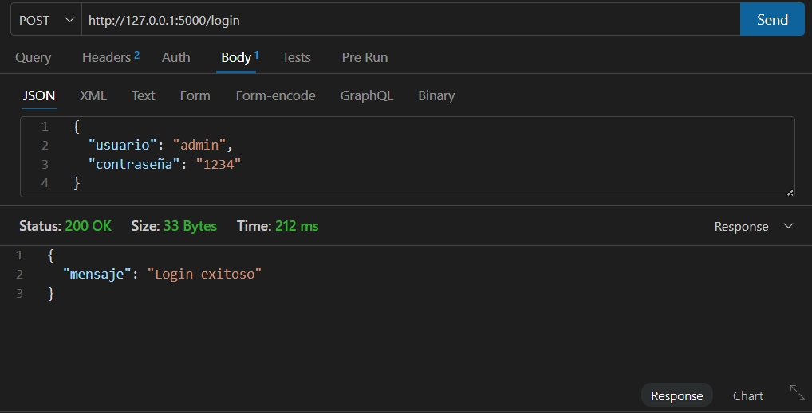
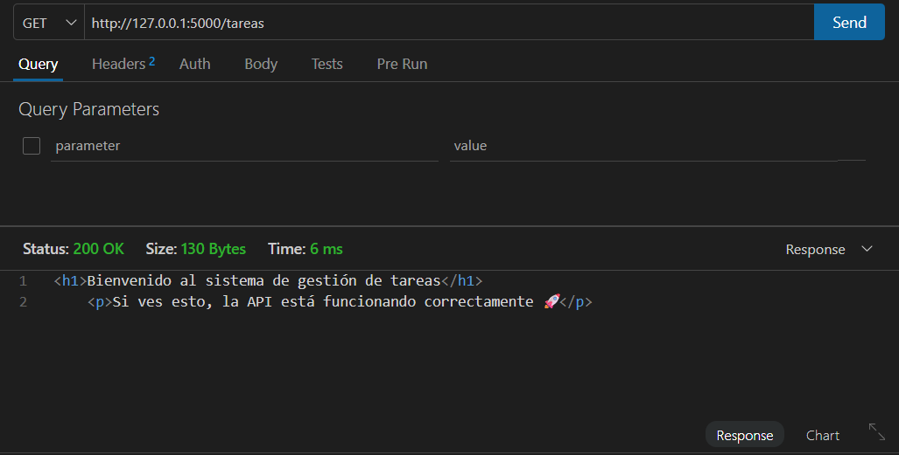
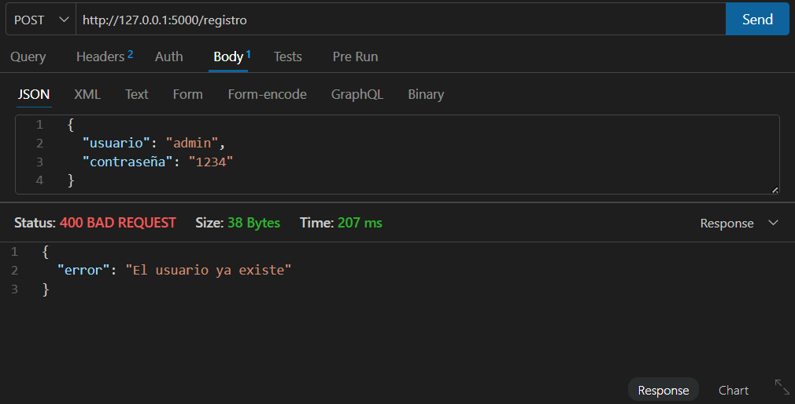
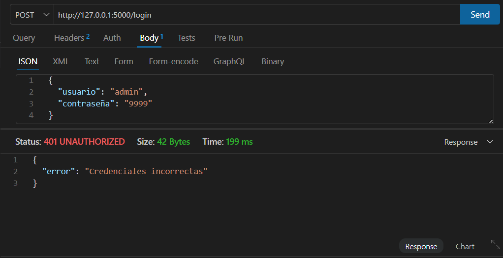
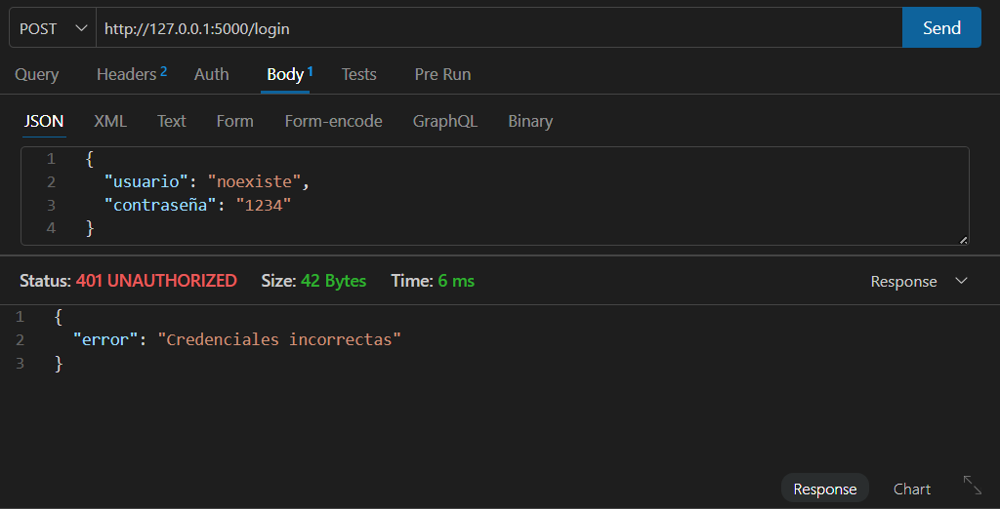
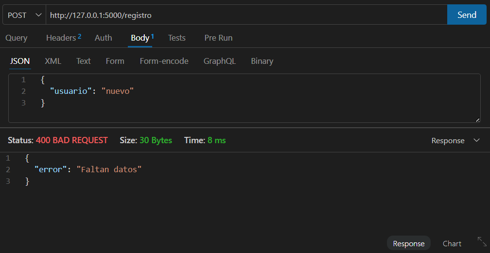
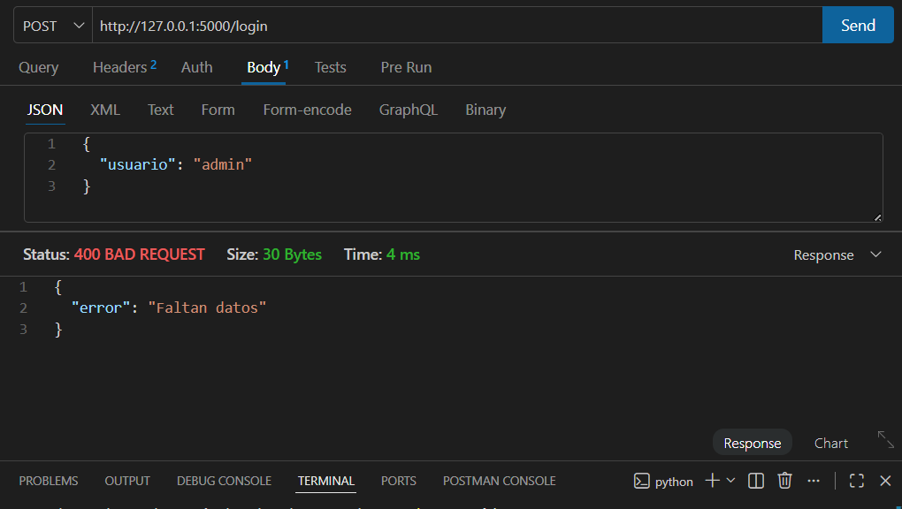

API REST con Flask + SQLite
Esta API permite registrar usuarios, iniciar sesión y acceder a un sistema básico de tareas. Implementa persistencia con SQLite y seguridad mediante hash de contraseñas.
POST /registro → Registrar usuario
POST /login → Iniciar sesión
GET /tareas → Página HTML








python servidor.py